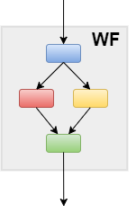

rocketsled is a flexible, automatic (open source) optimization framework “on rails” for serious high throughput computation.
rocketsled is an extension of FireWorks workflow software, written in Python.
Is rocketsled for me?¶
Is your computational problem:
1. Expensive and/or complex?¶
Does it require high performance computing + workflow tools?
2. Run in high-throughput?¶
Many similar workflows running concurrently?
3. Limited by an allocation of CPU hours?¶
Want the most “bang for your buck”?
If you answered yes to these three questions, keep reading!
If you have a complex, multi-iteration task to execute on high performance computers, and you would like to automatically reduce the number of expensive calculations needed to run your task, rocketsled is for you.
What does rocketsled do?¶
rocketsled functions as a black box optimizer for a sequential optimization
loop; it requires no knowledge of a function in order to optimize it.
More importantly though, rocketsled retains the workflow management abilties of FireWorks (provenance, dynamic workflows, duplicate detection and correction, error handling) across arbitrary computing resources.
rocketsled is intended to be “plug-and-play”, meaning simply “plug-in” an expensive
objective function, constraints, and (optionally) a black box optimization algorithm,
and rocketsled + FireWorks handles the rest.
A visual explanation…¶
rocketsled is designed for optimization tasks with sequential improvement. For example, a typical workflow without optimization might look like this:

Input parameters are given to the first job (Firework). This begins the workflow, and a useful output result is given. The workflow is repeated as desired, often across many compute nodes in parallel.
{kind=link}
Randomly selecting the next sets of input parameters to run is inefficient, since we will execute many workflows, including those with unfavorable results. To reduce the required number of computed workflows, we need to intelligently choose new input parameters with an optimization loop.
This is where rocketsled comes in handy. rocketsled is a sub-job (FireTask) called OptTask, which can go in any Firework in the workflow, and which uses sklearn regressors to predict the best input parameters for the next iteration, store them in a MongoDB database, and start a new workflow to compute the next output.
Features of rocketsled¶
- One-line setup tools
- Persistent storage and optimization tracking
- Ability to handle complex search spaces, including:
- discrete (categorical, integer) dimensions
- continuous dimensions
- discontinuous spaces (subsets of entire spaces)
- 10 Built-in “out-of-the-box” sklearn-based Bayesian optimizers
- Support for nearly any custom optimizer written in Python (both Bayesian and non-Bayesian)
- Facilitated feature engineering with
get_zargument - Tuneable control of training and prediction performance, across many kinds of computer resources
- Avoids submitting duplicate workflows, even when workflows run with massive parallelism
- Automatic encoding for categorical optimization
- and more… (see comprehensive guide)
Installation¶
Requirements¶
- Python 2 or 3
- NumPy
- SciPy
- Scikit-learn
- FireWorks
- MongoDB
Install¶
$ # Download the repository and install
$ git clone https://github.com/hackingmaterials/rocketsled.git
$ cd rocketsled
$ pip install -e . -r requirements.txt
Run tests locally¶
$ # Make sure the mongod daemon is running
$ mongod
$ python setup.py test
Tutorials¶
Tutorials 1 and 2 require some knowledge of Fireworks. If you aren’t comfortable with Fireworks, please work through the tutorials here.
Quickstart¶
Quickstart link will be here.
Tutorial 1 - Basic usage¶
Basic usage tutorial link will be here.
Tutorial 2 - Advanced usage¶
Advanced usage tutorial link will be here.
A Comprehensive Guide to rocketsled¶
Comprehensive guide link will be here.
Usage Cases¶
Usage cases will have link here